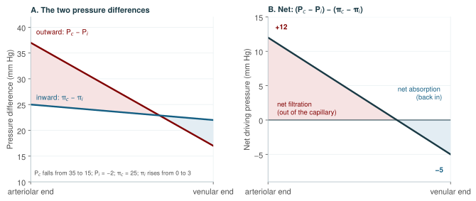
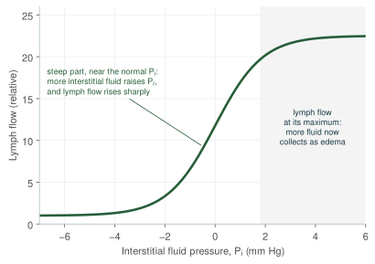
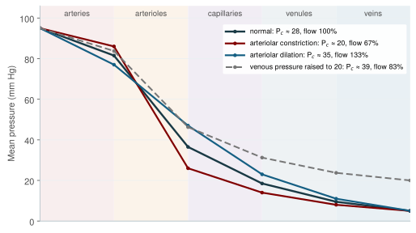
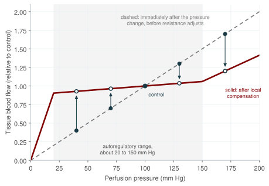
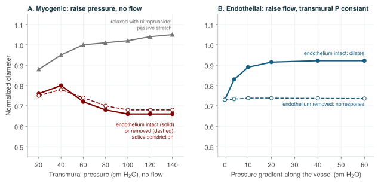
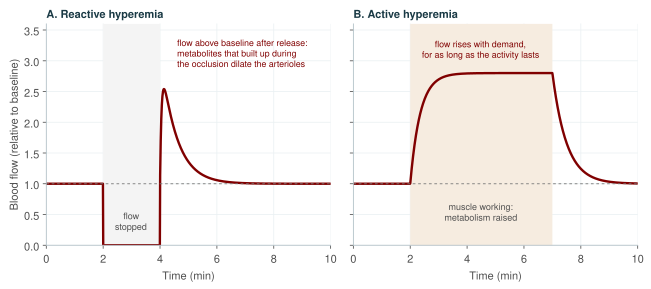

8 Microcirculation and Local Control
Exchange across the capillary wall, and how each tissue sets its own flow
- Describe how capillary structure, number and arrangement support exchange, and why blood moves slowly through them.
- Use Fick’s law to predict how concentration difference, surface area, permeability and diffusion distance change solute transfer.
- Use the Starling forces to predict whether a change favors filtration or absorption, and explain when edema forms.
- Explain how arteriolar tone sets capillary hydrostatic pressure.
- Distinguish the myogenic, endothelial and metabolic mechanisms of local control, and the experiments that separate them.
- Tell active from reactive hyperemia.
- Explain why a capillary one cell thick does not rupture.
The numbers in figure captions are illustrations. Know the directions and the reasoning.
Everything upstream of the capillaries exists to deliver blood to them. This chapter is about what happens when it arrives: how gases, solutes and water cross the capillary wall, where the extra fluid goes, and how each tissue adjusts the radius of its own arterioles to get the flow it needs. It builds directly on Peripheral Circulation and Hemodynamics, especially Poiseuille’s law, aggregate cross-sectional area and the difference between perfusion and transmural pressure. Reflex and hormonal control of the same vessels is in ANS and Extrinsic Control.
8.1 The microcirculation
The microcirculation is the arterioles, the capillaries and the venules. In some tissues small precapillary sphincters guard the entrances to the capillaries, and short channels (metarterioles) run from arterioles across to venules. The arterioles regulate how much blood enters; the capillaries provide an enormous surface for exchange.
If you watch a living capillary bed under a microscope, red cells pass through the capillaries one after another, slowly, with no visible pulse. The pulse has been filtered out upstream by the combination of arterial compliance and arteriolar resistance, the hydraulic filter of the previous chapter. How a bed is organized varies a good deal from tissue to tissue; textbook drawings are schematic.
8.1.1 Arterioles: the stopcocks of the circulation
Arterioles are resistance vessels: an endothelium inside a thick coat of smooth muscle. By contracting or relaxing that muscle they change their radius, and because resistance varies with 1/r4, a small change in radius makes a large change in resistance. The course compares them to the stopcock on an IV line, which can be turned to shut one port off completely. An arteriole can constrict enough to stop flow into a tissue bed.
Raynaud phenomenon shows this in the fingers. With a mild chill the digital arterioles clamp down, the fingers turn white, and they ache because the tissue is briefly ischemic. When flow returns they flush pink, for a reason covered under metabolic control below.
8.1.2 Capillaries: built for exchange
- Wall. A single layer of flattened endothelial cells, 0.2 to 0.5 µm thick, on a basement membrane, with scattered contractile pericytes inside the basement membrane. There is no smooth muscle and no outer adventitia.
- Size. 5 to 10 µm in diameter, about the size of a red cell, so red cells pass in single file. Each capillary is about 0.5 to 1 mm long.
- Distribution. Capillary density follows the tissue’s metabolic demand. Active tissues such as heart muscle have far more capillaries per gram than quiet ones.
- Number. About 1010 capillaries in parallel, whose aggregate cross-sectional area is the 24-inch pizza (the Big Benito) of the previous chapter.
Mean velocity is total flow divided by aggregate cross-sectional area. Because that area is so large, blood moves through the capillaries at only about 0.03 cm/s, a fraction of a millimeter per second, and the slow transit gives time for exchange.
8.2 Crossing the capillary wall
Different substances take different routes.
- Lipid-soluble substances, including O2 and CO2, diffuse straight through the endothelial cells, crossing two plasma membranes and the cytoplasm between them.
- Small water-soluble solutes, such as Na+, K+, Cl− and glucose, diffuse through water-filled pathways in the clefts between endothelial cells, a few nanometers wide. (The slide calls these “intra-cellular clefts.” They are the gaps between cells.)
- Plasma proteins, above all albumin, are strongly held back and normally stay in the capillary. In inflammation, as in sepsis, the barrier is injured and albumin leaks out.
8.2.1 Fick’s law: concentration drives diffusion
Solutes and gases cross the wall mainly by passive diffusion. Fick’s first law describes it:
\[J = -D\,\frac{d\phi}{dx}\]
J is the flux of solute (amount per unit area per unit time), dφ/dx is the concentration gradient across the barrier, and D is the diffusion coefficient of that solute in that barrier. The minus sign says that solute moves down its gradient, from high concentration to low. The law has the same shape as Ohm’s law: the gradient plays the role of the pressure difference, and the diffusion coefficient plays the role of a conductance. You will not calculate it, but you should be able to predict what changes the rate.
| Change | Effect, with the other factors fixed |
|---|---|
| Larger concentration difference | More net flux down the gradient |
| More exchange surface area | More total transfer, with the barrier’s intrinsic permeability unchanged |
| Higher (or lower) barrier permeability | Higher (or lower) flux per unit area |
| Longer diffusion path | Less transfer for the same concentration difference |
The numbers are large. The systemic capillaries have about 100 m² of wall, roughly half a singles tennis court. Do not confuse that with the aggregate cross-sectional area of about 2,800 cm²: the first is the area of wall available for exchange, the second the area that blood flows through. Most cells lie within about 10 µm of a capillary, and lengthening that distance even a little matters. Interstitial edema pushes cells and capillaries apart, so the diffusion path lengthens, O2 flux falls, and tissue oxygen delivery suffers.
8.3 Water: the Starling forces
About 20 L of fluid a day is filtered out of the capillaries and most of it comes back. The Starling equation estimates the direction and size of the net water movement across the capillary wall. The course writes it as:
\[Q_f = K\left[(P_c - P_i) - \sigma(\pi_c - \pi_i)\right]\]
A positive Qf means filtration, water moving from the capillary into the interstitium. A negative Qf means absorption.
| Term | What it is | Direction it pushes water | Course value |
|---|---|---|---|
| Pc | Capillary hydrostatic pressure, pressing on the wall from inside | Out | About 25 mm Hg (falling from about 35 at the arteriolar end to about 15 at the venular end) |
| Pi | Interstitial hydrostatic pressure | In | About 0 mm Hg (slightly negative in many tissues; the lecture’s worked example uses −2) |
| πc | Plasma oncotic pressure, set by plasma proteins, mostly albumin | In | About 25 mm Hg |
| πi | Interstitial oncotic pressure, set by the protein outside the capillary | Out | 1 to 5 mm Hg |
| σ | Reflection coefficient: how well the wall holds protein back (1 = completely; 0 = not at all) | Close to 1 normally; falls in inflammation | |
| K | Filtration constant: how permeable the wall is to water (the slides write k or Kf) | Rises sharply in burns, trauma, sepsis, toxic injury and after cardiac arrest |
Oncotic pressure always draws water toward the side with more protein. Hydrostatic pressure pushes water away from the side where it is higher. The equation is the sum of the outward pressures minus the sum of the inward ones, scaled by K. Clinically it is never calculated, because none of its terms is measured at the bedside. Its value is in predicting what a change will do.
The slide’s speaker notes and the lecture notes write the equation as Qf = k[(Pc + πi) − (Pi + πc)], grouping the outward and inward pressures, and the supplementary slide writes the net driving pressure as (Pc − Pi) − (πc − πi). These are the same as the form above with σ = 1, rearranged. The σ term is there to show what inflammation does: a leakier wall lets protein through, σ falls, and the plasma proteins hold less water in. When the wall is intact, use σ = 1 and all three forms give the same answer.
8.3.1 Along the length of a capillary: the classical model
Capillary hydrostatic pressure falls along the capillary, from about 35 mm Hg at the arteriolar end to about 15 mm Hg at the venular end, because blood loses pressure as it flows through it. The oncotic difference stays roughly constant. In the classical model, then, the net force favors filtration near the arteriolar end and can cross over to favor absorption near the venular end (Figure 8.1).

The crossover comes from the fall in Pc, not from a change in protein concentration. (As water filters out, the protein left behind in the capillary becomes slightly more concentrated, but in this model πc is treated as roughly constant.)
This is a simplified model, and it does not describe every capillary bed. What matters is the balance: across the body, filtration exceeds absorption by about 2 to 4 L a day, and that excess has to leave the tissues another way.
The lecture’s supplementary slide works one example, with σ = 1 and all pressures in mm Hg.
| Pc | Pi | πc | πi | Net = (Pc − Pi) − (πc − πi) | |
|---|---|---|---|---|---|
| Arteriolar end | 35 | −2 | 25 | 0 | (35 + 2) − 25 = +12 |
| Venular end | 15 | −2 | 25 | 3 | (15 + 2) − 22 = −5 |
The net driving pressure is not the same thing as capillary hydrostatic pressure, and the flow it produces also depends on K. The numbers are illustrative: real capillary beds differ, and the balance shifts whenever Pc changes, as after a hemorrhage.
8.4 Lymphatics: the sewer system
The lymphatics are a second circulatory system, one you probably dissected past without seeing because their walls are so thin. Terminal lymphatics sit right next to the capillaries. Their openings are relatively large, so filtered protein enters along with water. Larger lymphatics have one-way valves, like veins, and smooth muscle that contracts rhythmically to pump lymph forward. Contraction of the surrounding skeletal muscle adds to the pumping. Lymph returns the net capillary filtrate, about 2 to 4 L a day, to the circulation through the thoracic duct, and with it about a quarter to a half of the circulating plasma protein each day.
Lymph flow rises as interstitial pressure rises (Figure 8.2). More filtration puts more fluid into the interstitium, Pi rises, and lymph flow increases to carry it away. That works over a useful range. At high interstitial pressures lymph flow reaches its maximum and cannot rise further. Edema develops when fluid enters the interstitium faster than the lymphatics can clear it.

8.5 Using the Starling forces
For any situation, predict the direction of each term separately, then decide which is likely to dominate. In a real patient several can change at once.
| Situation | Main change | Expected tendency |
|---|---|---|
| Expanded intravascular volume, or a rise in venous pressure (as in heart failure) | ↑ Pc | More filtration |
| Low plasma albumin: protein malnutrition, a protein-losing state such as nephrotic syndrome | ↓ πc | More filtration; edema, and fluid in the abdomen (ascites) |
| Inflammation or barrier injury: burns, sepsis | ↑ K and ↓ σ; protein leaks out, so πi rises | More fluid and protein escape |
| Lymphatic blockage | Less fluid cleared | Interstitial fluid accumulates |
| Hemorrhage, or an acute fall in arterial pressure | ↓ Pc | Less filtration; for a while, net absorption of interstitial fluid into the blood |
| Severe dehydration (salt and water loss) | ↓ Pc, and plasma proteins are concentrated so πc rises | Less filtration; fluid drawn into the capillaries |
| Intravenous albumin | ↑ πc | Water drawn from the interstitium into the capillaries |
| A large intravenous infusion of water or saline | ↑ Pc and diluted plasma proteins, ↓ πc | More filtration |
| Standing still for hours | ↑ Pc in the legs from the column of blood above them | More filtration; swollen ankles |
Standing still is worse than walking. When you walk, the contracting leg muscles squeeze the valved veins and the lymphatics. That lowers venous pressure in the legs, so Pc falls, and pumps lymph away. Standing motionless (for ten hours, say, holding a retractor in a long operation) gives neither benefit, and the shoes get tight.
Compression stockings help by raising the pressure outside the capillaries. A higher Pi reduces the net outward pressure, so less fluid filters out, and the external squeeze also supports venous and lymphatic return. Wrap a hand and forearm in an elastic bandage for an hour and the arm holds less interstitial fluid when you take it off, partly because lymph flow rose.
The lecture notes say the stockings push water back into the capillaries. The slide’s own notes put it better: the main effect is less filtration and better venous and lymphatic return, not sustained reabsorption.
8.6 Arterioles set capillary hydrostatic pressure
Apply Ohm’s law along the pathway from artery to vein. The segments are in series, so each one’s share of the pressure drop is proportional to its resistance. Hold arterial and venous pressures fixed and change only the arterioles (Figure 8.3):
- Arteriolar constriction raises the arterioles’ share of the total resistance, so more of the pressure is used up before the blood reaches the capillaries. Pc falls, and so does flow. Filtration falls and absorption is favored.
- Arteriolar dilation does the reverse: less pressure is lost upstream, Pc rises, flow rises, and filtration rises.
- Raising venous pressure, or resistance downstream of the capillaries, raises Pc too, because the capillaries sit between the arteriolar and venous resistances.
So the arterioles set more than flow. They also set how much fluid each capillary bed filters or reabsorbs. If an arteriole clamped down completely, the pressure on its downstream side would fall toward venous pressure.

Treat the capillary as a node between a precapillary resistance (mostly the arterioles) and a postcapillary resistance (mostly the venules). With arterial and venous pressures fixed, Pc lies between them, closer to whichever side has the smaller resistance. Normally precapillary resistance is several times larger than postcapillary resistance, so Pc sits nearer venous pressure than the simple average of the two. Raising precapillary resistance (arteriolar constriction) or lowering postcapillary resistance moves Pc toward venous pressure. Lowering precapillary resistance or raising postcapillary resistance (venular constriction) moves it toward arterial pressure.
8.7 Local control of blood flow
8.7.1 Vasomotor tone
Arteriolar smooth muscle is normally partly contracted. This basal tone is what lets an arteriole both constrict and dilate. More tone narrows the vessel and raises its resistance; less tone dilates it and lowers resistance, and because of the fourth-power law a small change in radius has a large effect.
Two kinds of influence set tone:
- Extrinsic influences come from outside the tissue: sympathetic nerves and circulating signals such as epinephrine, angiotensin II and vasopressin. These are covered in ANS and Extrinsic Control.
- Local influences come from the tissue and the vessel itself: pressure, flow and metabolism. They need no nerves and no central control.
Their relative importance differs among tissues. Local control dominates minute to minute in the heart and brain; the skin and the splanchnic bed are under strong sympathetic control. The Coronary Circulation and Other Special Circulations chapters take each bed in turn.
8.7.2 Autoregulation
Autoregulation is the overall result of local control: blood flow through a tissue stays nearly constant across a wide range of perfusion pressures, about 20 to 150 mm Hg in the lecture’s skeletal muscle example (Figure 8.4). When perfusion pressure changes suddenly, flow first changes with it, because resistance has not had time to change. Then, over the following seconds to a minute, the arterioles adjust their radius and flow returns close to its earlier value. Below the range, the arterioles are already fully dilated and flow falls with pressure. Above it, they are fully constricted and flow rises with pressure.

The speaker notes for the autoregulation slide, and the lecture notes, give the range as 20 to 120 mm Hg. The course uses 20 to 150 mm Hg. Sources differ on the upper limit. The point to keep is that the range is wide, not narrow.
Three local mechanisms carry out autoregulation and the rest of local control: myogenic, endothelial and metabolic. Two experiments on a single isolated arteriole separate the first two, and they depend on keeping two pressures apart:
- Transmural pressure is the pressure across the vessel wall, inside minus outside. It stretches the wall, and it is the stimulus for the myogenic response.
- The longitudinal pressure gradient is the pressure difference along the vessel from one end to the other. It drives flow, and with flow comes shear on the endothelium.
8.7.3 A quick review: flow versus velocity
Before the experiments, one caution from the previous chapter. Mean velocity is v = Q/A, and what happens to flow and velocity when a vessel widens depends on what is held constant.
| If radius increases… | Volume flow, Q | Mean velocity, v |
|---|---|---|
| with Q held fixed | Unchanged | Decreases (v ∝ 1/r²) |
| with ΔP held fixed (ideal Poiseuille tube, length and viscosity fixed) | Increases (Q ∝ r4) | Increases (v ∝ r²) |
| in a vascular network | Depends on how flow redistributes | Depends on Q and A |
“Dilating an arteriole slows the blood” is true only if the flow through it stays the same. If the pressure difference stays the same, dilating a single tube speeds the blood up. In the body, blood turned away from one constricted bed goes largely to its neighbors, so always ask what is being held constant before predicting velocity.
8.7.4 The myogenic response: stretch causes constriction
In the first experiment an isolated arteriole is connected at both ends to fluid reservoirs at the same height, so nothing flows through it. Raising both reservoirs together raises the pressure inside the vessel, and so its transmural pressure, with no flow at all (Figure 8.5 A).
A rubber tube would simply expand. The arteriole stretches for a moment and then actively narrows, and the higher the pressure, the narrower it gets. Removing the endothelium does not change the response, so it comes from the smooth muscle itself. Relaxing the smooth muscle with sodium nitroprusside, an NO donor, abolishes the constriction and reveals the passive distension underneath: without active tone, the vessel just stretches.
Stretch opens mechanosensitive pathways in the smooth muscle that let more Ca2+ into the cell, and contraction strengthens.
↑ transmural pressure → stretch of arteriolar smooth muscle → ↑ Ca2+ entry → contraction → ↓ radius (↑ resistance) → flow held near its earlier value. The opposite happens when transmural pressure falls.

The myogenic response defends a tissue’s flow against a rise in arterial pressure. It also acts when you stand: the higher transmural pressure in the arterioles of the feet makes them constrict, which limits the rise in capillary pressure and filtration below them.
Several stretch-sensitive channels and signaling pathways link stretch of vascular smooth muscle to Ca2+ entry and contraction. Piezo1 and Piezo2 are among the mechanosensitive channels involved. Mechanosensation comes up again with the baroreceptors. No single channel accounts for the whole myogenic response, and you do not need to name them.
8.7.5 Endothelial control: shear causes dilation
Shear stress is the frictional drag of moving blood on the endothelium. The blood touching the wall does not move, so the drag depends on how steeply velocity rises from the wall toward the center: the faster the flow, the steeper that rise and the greater the drag. (Very high shear can strip endothelial cells from the wall.)
In the second experiment the transmural pressure is held constant, and the pressure gradient along the arteriole is raised step by step, so flow through it increases. Each step dilates the arteriole (Figure 8.5 B). Removing the endothelium abolishes the response, so this mechanism depends on the endothelium.
The endothelial signal is mainly nitric oxide (NO), with prostacyclin (PGI2) as a second dilator. NO diffuses into the neighboring smooth muscle, activates soluble guanylyl cyclase and raises cGMP, which relaxes the muscle. When an effect is endothelium-dependent, NO is the first candidate, and for this course it is enough to think of flow-induced dilation as NO-mediated. Nitroprusside, from the first experiment, works by supplying NO directly.
↑ flow (blood velocity) → ↑ wall shear stress → ↑ endothelial NO and PGI2 → ↑ cGMP in smooth muscle → relaxation → ↑ radius (↓ resistance). For a given flow, the wider vessel has a lower wall shear, which limits the stimulus.
The shear slide ends its chain with “↓ Velocity.” The slide’s speaker notes say not to claim that the experiment shows reduced velocity, and they are right: in the experiment flow rises, and the vessel dilates because flow rose. What the dilation reduces, for a given flow, is the shear on the wall. That is the negative feedback: more shear, more dilation, less shear per unit of flow.
8.7.6 Metabolic control: matching flow to demand
When a tissue’s metabolism rises, or its blood supply falls, local signals build up that dilate its arterioles and precapillary sphincters. The course names adenosine (from the breakdown of ATP), K+, CO2 and H+, and low O2. Resistance falls and flow into the bed rises. The extra flow improves O2 delivery and washes the vasodilator metabolites out, and as they clear, the vessels return toward their basal tone. It is feedback driven by the tissue’s own metabolism: production of the dilators is proportional to metabolic rate, and their removal is proportional to blood flow.
↓ blood flow or ↑ metabolism → ↑ local vasodilator metabolites → arteriolar dilation → ↓ resistance → ↑ flow → metabolites washed out → tone returns.
Two everyday results have names (Figure 8.6):
| Active hyperemia | Reactive hyperemia | |
|---|---|---|
| Trigger | Increased tissue metabolism | A temporary interruption of flow |
| When flow increases | During the increased activity | After flow is restored |
| Example | Working skeletal muscle | Release of an occlusion: a cuff, a pressed fingertip, Raynaud fingers rewarming |
| Response | Perfusion rises with demand | Flow overshoots above baseline for a while, then returns |
Squeeze a fingertip hard for a minute or two and let go: the pink flush is reactive hyperemia. Metabolites accumulated while flow was stopped, and they keep the arterioles dilated until the extra flow washes them out. Both kinds of hyperemia correct a mismatch between delivery and the tissue’s needs.

8.7.7 Summary of local control
| Mechanism | Primary stimulus | Typical response | Needs the endothelium? |
|---|---|---|---|
| Myogenic | Increased transmural pressure (stretch) | Smooth muscle contraction | No |
| Endothelial | Increased flow-induced shear | Dilation, via NO and prostacyclin | Yes |
| Metabolic | Demand exceeding O2 or nutrient delivery | Local dilation | Not required; acts mainly on smooth muscle |
The myogenic experiment changes pressure without flow. The endothelial experiment changes flow at constant transmural pressure.
8.8 Why don’t capillaries rupture?
Capillary hydrostatic pressure is about 25 to 35 mm Hg, held by a wall one cell thick. Why doesn’t it burst?
For a cylindrical vessel, the law of Laplace gives the tension in the wall (force per unit length of wall) needed to hold a given transmural pressure:
\[T = \Delta P \times r\]
At the same pressure, a smaller radius needs proportionally less wall tension. A capillary has a radius of about 2.5 µm, the aorta about 1.25 cm. That is a 5,000-fold difference in radius, so at equal pressure the aortic wall would have to carry 5,000 times the tension of the capillary wall.
| Vessel | Illustrative radius | Relative wall tension at equal pressure |
|---|---|---|
| Capillary | 2.5 µm | 1 |
| Aorta | 1.25 cm | 5,000 |
The tension is spread through the thickness of the wall. The wall stress, which is what the wall material actually has to withstand, is about
\[\text{wall stress} \approx \frac{\Delta P \times r}{w}\]
where w is the wall thickness. A thicker wall lowers the stress at a given pressure and radius. The aorta, with its large radius, needs a thick wall; the capillary, with its tiny radius, gets by with one cell. (For a sphere, such as an alveolus, the law of Laplace has a factor of 2, P = 2T/r; see Respiratory Statics.)
8.9 Check your understanding
The arterioles feeding a capillary bed constrict while arterial and venous pressures stay the same. Trace what happens to the pressure drop across the arterioles, Pc, and net filtration. Now leave the arterioles alone and raise venous pressure instead, as in heart failure. What changes?
Answer
Constriction raises the arterioles’ share of the resistance, so a larger part of the pressure drop occurs across them, Pc falls, and net filtration falls (absorption is favored). Raising venous pressure raises Pc directly, because the capillaries sit between the arteriolar and venous resistances, so filtration rises and edema becomes more likely.
A patient with severe dehydration has lost salt and water but no protein. Which Starling term does the water loss change, and which way does fluid move between the interstitium and the capillaries? Apply the same reasoning to a child with severe protein malnutrition.
Answer
Losing water without protein concentrates the plasma proteins, so πc rises. More oncotic pressure holds water in the capillaries, net filtration falls, and fluid is drawn from the interstitium into the capillaries. (The lower blood volume also lowers Pc, which pushes the same way.) In protein malnutrition, plasma albumin is low, so πc falls. Less oncotic pressure holds water in the capillaries, filtration rises, and edema forms, in severe cases with ascites. Low albumin is only part of the story; the lecture notes that malnutrition is more complex.
In severe sepsis the capillary wall becomes leaky. Which terms of the Starling equation change, and which way?
Answer
K rises (more water crosses for a given pressure difference) and σ falls (the wall holds protein back less well). Protein leaks into the interstitium, so πi rises and the effective oncotic difference holding water in falls. All of these favor filtration, so edema forms even if Pc is normal.
Arterial pressure into a resting vascular bed rises suddenly and then stays high. Describe what happens to flow through the bed in the first few seconds and over the next minute, and name the local mechanism responsible for the change.
Answer
In the first seconds flow rises, because the pressure difference across the bed is larger and resistance has not changed yet. The higher pressure also stretches the arteriolar walls. Within seconds their smooth muscle responds to the raised transmural pressure by contracting, the myogenic response, and the arterioles narrow. Resistance rises, and flow falls back toward its earlier value even though the pressure stays high. That is autoregulation: over the range the bed can regulate, flow stays nearly constant as perfusion pressure changes.
A blood pressure cuff on the upper arm is inflated above systolic pressure for three minutes and then released. Describe the forearm blood flow over the next few minutes, and explain it.
Answer
Flow is zero while the cuff is up. After release it rises well above its earlier value, then falls back over the next minute or two: reactive hyperemia. During the occlusion, vasodilator metabolites (adenosine, K+, CO2 and H+, low O2) built up and dilated the arterioles. The high flow on release washes them out, and tone returns.
When you stand still, the column of blood above your feet raises capillary hydrostatic pressure there several-fold. Why does a vessel with a wall one cell thick still not burst? What two features of a vessel’s design keep the stress in its wall low?
Answer
Wall stress is about ΔP × r / w. A capillary’s radius is so small that the tension its wall must carry (T = ΔP × r) stays tiny even when the pressure inside rises, so a single cell layer is strong enough. The two features are a small radius and a thick wall: large vessels, which cannot have a small radius, need thick walls instead.
8.10 Key equations
| Equation | Use |
|---|---|
| J = −D dφ/dx | Fick’s first law of diffusion (concept only) |
| Qf = K[(Pc − Pi) − σ(πc − πi)] | Starling: net filtration across the capillary wall |
| v = Q / A | Mean velocity |
| R = 8ηL / πr4 | Poiseuille: why a small change in radius has a large effect |
| T = ΔP × r | Law of Laplace for a cylindrical vessel |
| Wall stress ≈ ΔP × r / w | Stress in a wall of thickness w |
8.11 Sources
This chapter follows the 2026 Microcirculation and Local Control lecture for MEDC 30504 and draws on the 2026 lecture notes and the course’s 2018 microcirculation notes, corrected and updated. All figures were drawn for this book.